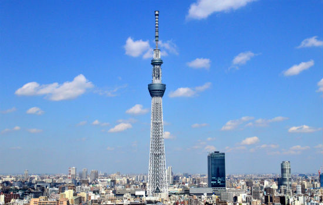
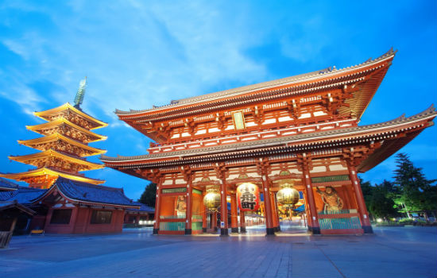
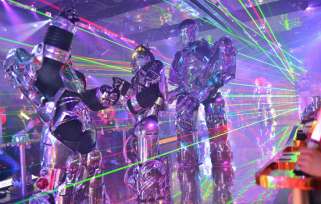
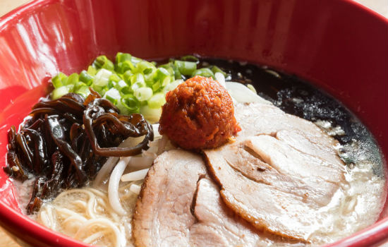
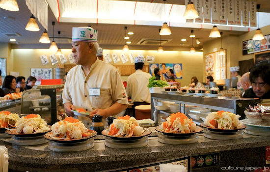
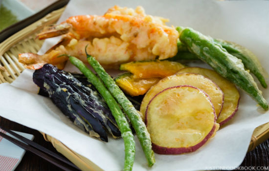
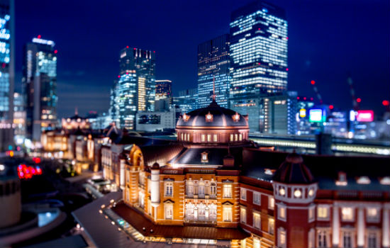
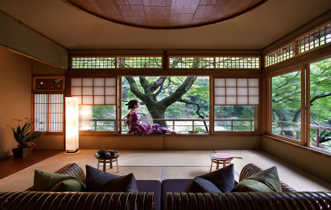
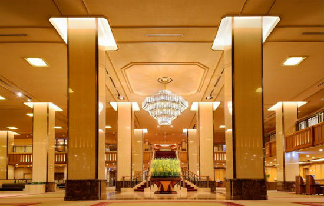

Are you interested in visiting Japan?
Hi, My name is Chieko. I'm from Japan. If you are looking for a unique experience and to learn about a new culture, I highly recommend visiting Japan! I will recomend my favorite things to do in Tokyo Japan.
Hi, My name is Chieko. I'm from Japan. If you are looking for a unique experience and to learn about a new culture, I highly recommend visiting Japan! I will recomend my favorite things to do in Tokyo Japan.
Tokyo Skytree is the world's tallest broadcasting tower! You can get a view of Tokyo from there.
Senso-ji is an ancient Buddhist temple located in Asakusa, Tokyo, Japan. It is Tokyo's oldest temple, and one of its most significant. You can ride a Jinrikisha, a small, two-wheeled, cart-like passenger vehicle with a retractable roof,pulled by one or more person, and they will take you the major sightseeing spots aroung Senso-ji.
Get ready for a night of eye-popping entertainment like nothing you've seen at the Robot Restaurant, where bright lights, techno music, dinosaurs, and dancers combine with robots for a sensory spectacle in the heart of the Kabukicho red-light district.
You cannot go to Japan without eating Ramen. Think of ramen as the pizza of Japan: a quick, fortifying meal, which may involve standing in line and is then quickly devoured. I'd recommend Ichiran or Ippudo as you cannot go wrong with these ramen chains.
Have you had real Sushi before? Japanese use very fresh fish with tasty rice. I recommend going to Tsukiji to get fresh raw fish (sasimi) or Sushi. Kaiten Sushi (rotating sushi restautant) is also a great place to enjoy Sushi with unique Japanese culture.
Tempura is seafood or vegetables that have been covered in batter and fried in oil. We eat tempura with by dipping into tempura sauce or with maccha salt.
Tokyo Station Hotel is directly connected to the JR Tokyo Station Marunouchi, for convenient travel throughout Japan. The hotel is also located just 30 minutes from the Haneda Airport Station by Tokyo Monorail; and 60 minutes from the JR Narita Airport Station by Narita Express.
Extreme attention to details, from design to service, this is a great choice for someone looking to relax and for some visual and sensorial inspiration. Also, greatly designed onsen (part of it is open-air) located on the 17th floor. Hoshinoya hotel is great choice!
Imperial Hotel is founded in 1890, has welcomed celebrities by offering impeccable Japanese hospitality.
